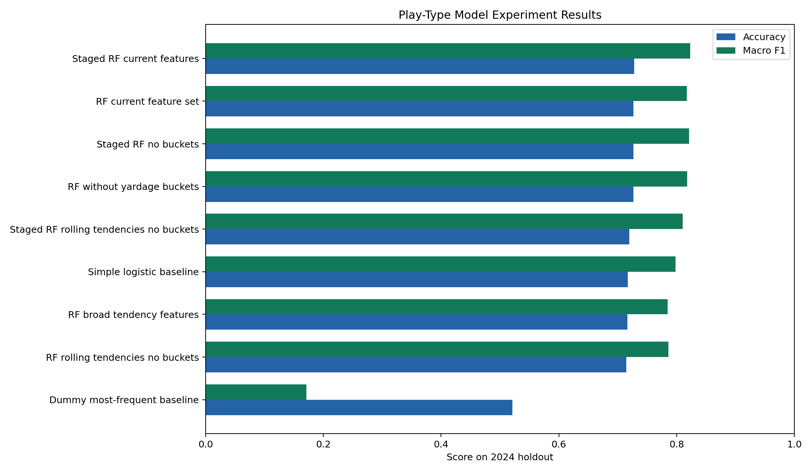
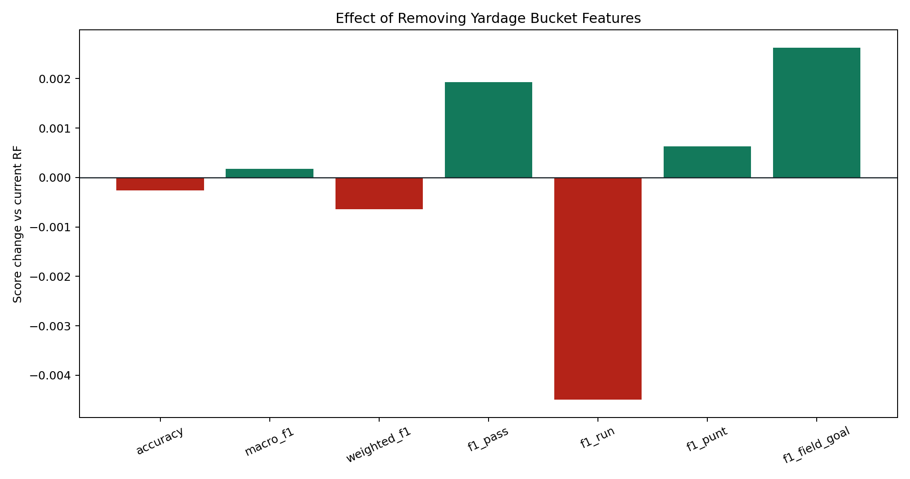
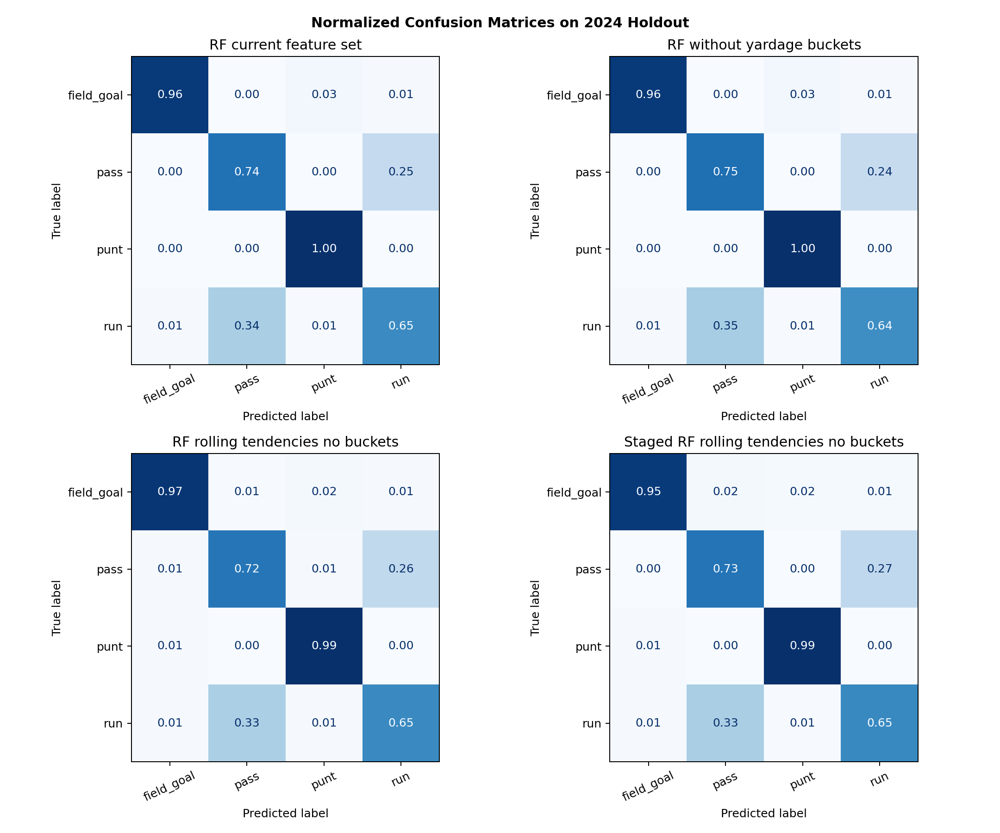
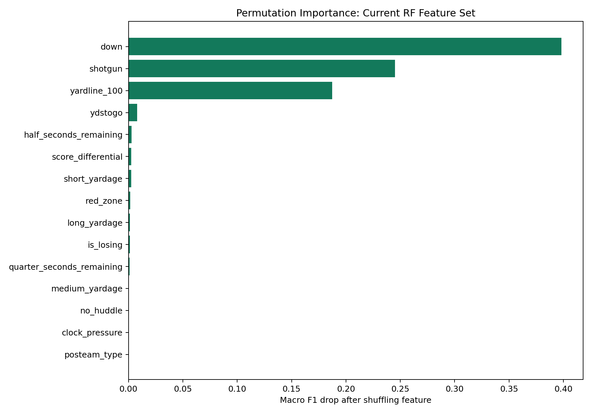

Headline
The experiment compares the current random forest feature set, a no-yardage-bucket ablation, a tendency-feature variant, a staged random forest, and simple baselines on a true 2024 holdout.
Metric Summary
| Experiment | Accuracy | Macro F1 | Weighted F1 | Pass F1 | Run F1 | Punt F1 | FG F1 |
|---|---|---|---|---|---|---|---|
| Staged RF current features | 0.7281 | 0.8232 | 0.7277 | 0.7435 | 0.6578 | 0.9627 | 0.9289 |
| Staged RF no buckets | 0.7267 | 0.8214 | 0.7260 | 0.7436 | 0.6537 | 0.9616 | 0.9265 |
| RF without yardage buckets | 0.7264 | 0.8178 | 0.7249 | 0.7468 | 0.6480 | 0.9585 | 0.9180 |
| RF current feature set | 0.7267 | 0.8176 | 0.7256 | 0.7448 | 0.6525 | 0.9578 | 0.9154 |
| Staged RF rolling tendencies no buckets | 0.7197 | 0.8101 | 0.7190 | 0.7360 | 0.6491 | 0.9547 | 0.9005 |
| Simple logistic baseline | 0.7172 | 0.7980 | 0.7169 | 0.7334 | 0.6502 | 0.9640 | 0.8446 |
| RF rolling tendencies no buckets | 0.7143 | 0.7861 | 0.7129 | 0.7311 | 0.6494 | 0.9206 | 0.8431 |
| RF broad tendency features | 0.7164 | 0.7847 | 0.7154 | 0.7291 | 0.6598 | 0.9168 | 0.8330 |
| Dummy most-frequent baseline | 0.5210 | 0.1713 | 0.3570 | 0.6851 | 0.0000 | 0.0000 | 0.0000 |
Accuracy and F1

Removing Yardage Buckets
This isolates what happens when short_yardage, medium_yardage, and long_yardage are removed while raw ydstogo remains.

Confusion Matrices

Permutation Importance
Permutation importance measures how much macro F1 drops when one feature is shuffled in the holdout set.
| Feature | Macro F1 Drop |
|---|---|
| down | 0.3982 |
| shotgun | 0.2451 |
| yardline_100 | 0.1875 |
| ydstogo | 0.0081 |
| half_seconds_remaining | 0.0028 |
| score_differential | 0.0027 |
| short_yardage | 0.0024 |
| red_zone | 0.0015 |
| long_yardage | 0.0014 |
| is_losing | 0.0012 |
| quarter_seconds_remaining | 0.0009 |
| medium_yardage | 0.0006 |

Stored Inference Feature Verification
The experiment recomputed these features from raw columns. This table shows what is currently stored in the SQLite DB before code fixes/backfill.
| Feature | Mismatches | Mismatch Rate | Stored Unique Sample |
|---|---|---|---|
| red_zone | 0 | 0.0% | 0, 1 |
| clock_pressure | 0 | 0.0% | 0, 1 |
| short_yardage | 0 | 0.0% | 0, 1 |
| medium_yardage | 0 | 0.0% | 0, 1 |
| long_yardage | 0 | 0.0% | 0, 1 |
| is_losing | 0 | 0.0% | 0, 1 |
| late_game | 0 | 0.0% | 0, 1 |
| quarter_half | 0 | 0.0% | 0, 1 |
| season | 0 | 0.0% | 2020, 2021, 2022, 2023, 2024, 2025 |
| posteam_type | 0 | 0.0% | away, home |
| defteam | 0 | 0.0% | ARI, ATL, BAL, BUF, CAR, CHI |